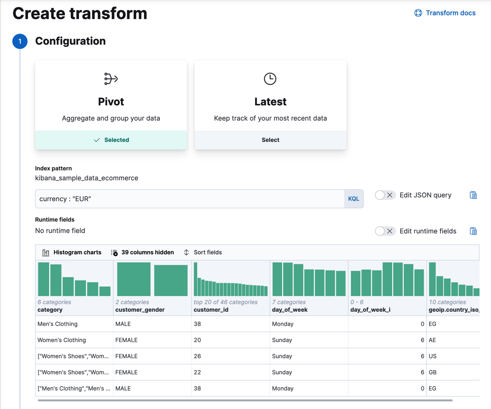
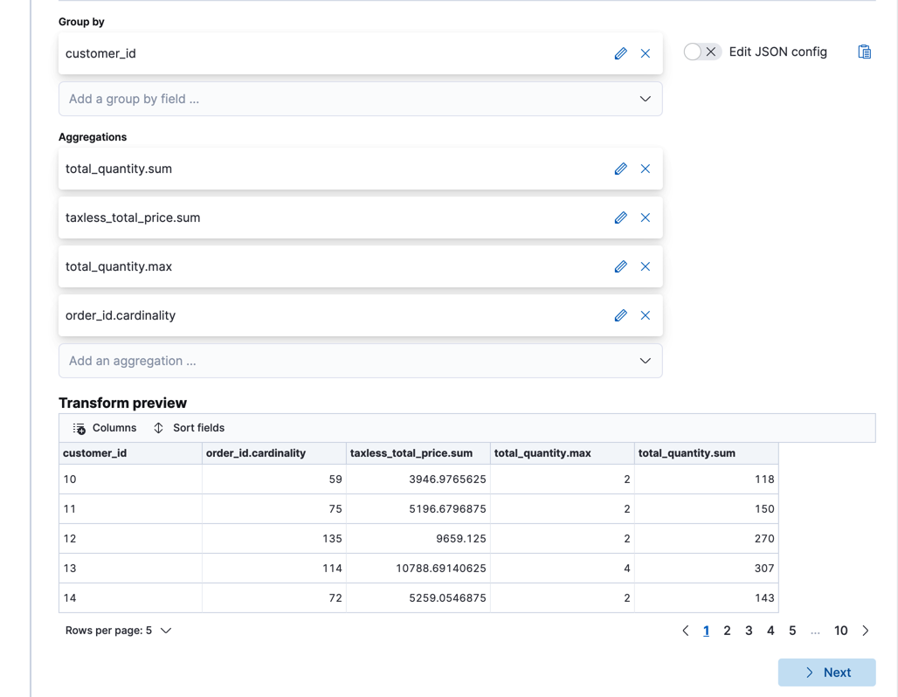
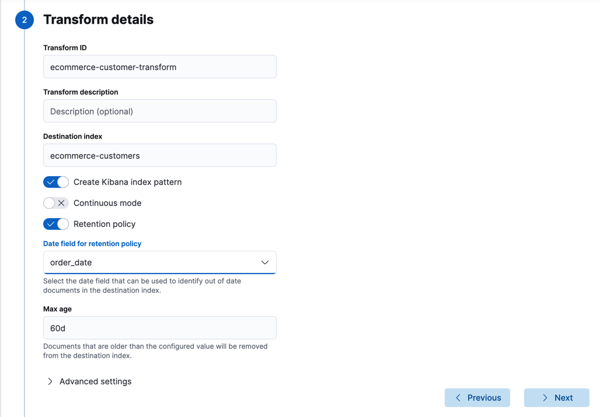
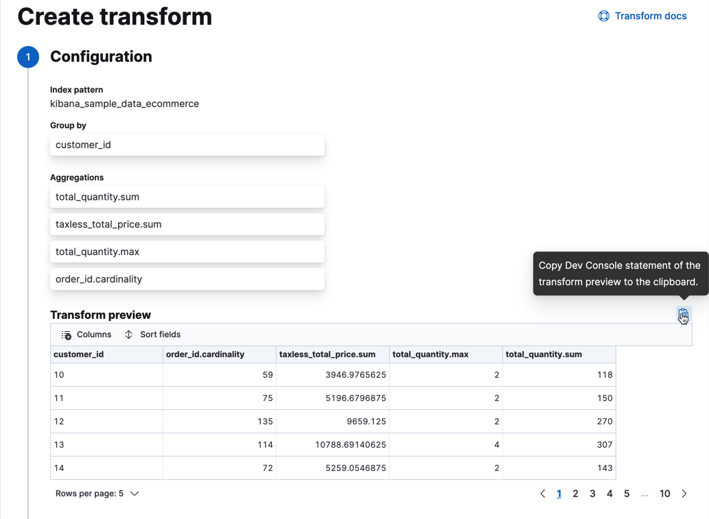
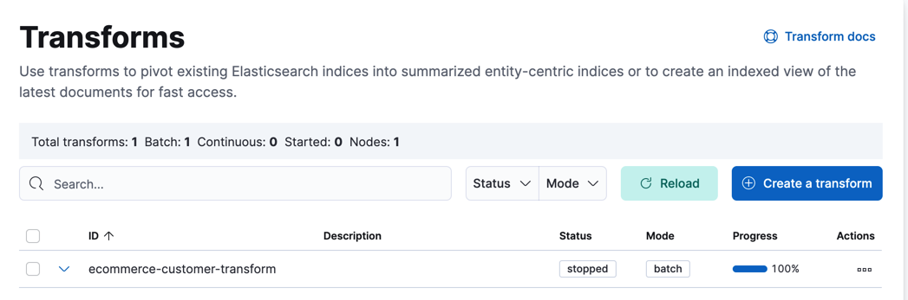
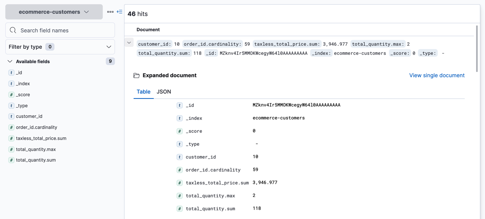
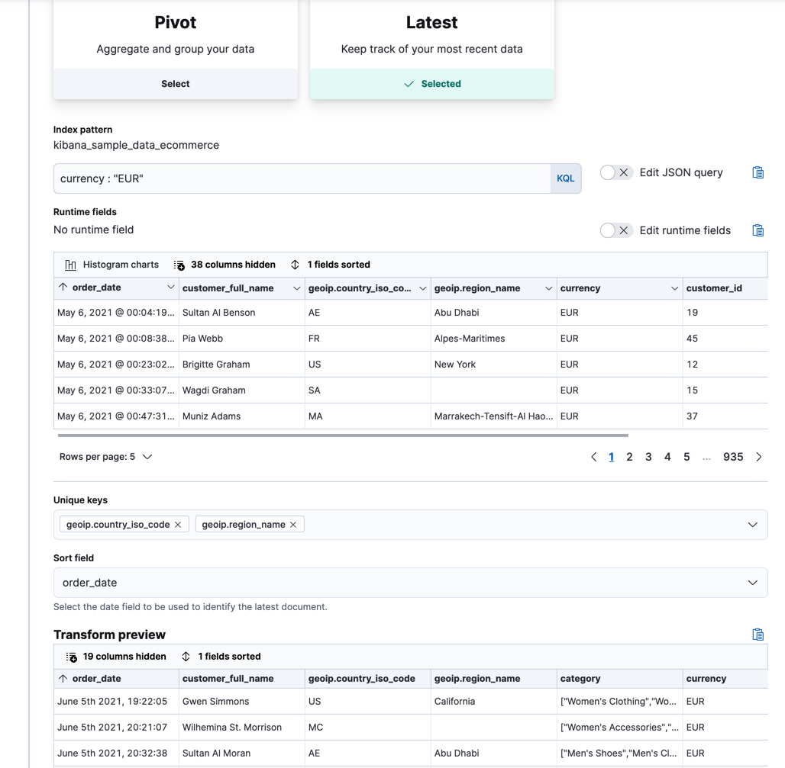

Transforming dataedit
Transforms enable you to convert existing Elasticsearch indices into summarized indices, which provide opportunities for new insights and analytics. For example, you can use transforms to pivot your data into entity-centric indices that summarize the behavior of users or sessions or other entities in your data. Or you can use transforms to find the latest document among all the documents that have a certain unique key.
Transform overviewedit
You can choose either of the following methods to transform your data: pivot or latest.
- All transforms leave your source index intact. They create a new index that is dedicated to the transformed data.
- Transforms might have more configuration options provided by the APIs than the options available in Kibana. For all the transform configuration options, refer to the API documentation.
Transforms are persistent tasks; they are stored in cluster state which makes them resilient for node failures. Refer to How checkpoints work and Error handling to learn more about the machinery behind transforms.
Pivot transformsedit
You can use transforms to pivot your data into a new entity-centric index. By transforming and summarizing your data, it becomes possible to visualize and analyze it in alternative and interesting ways.
A lot of Elasticsearch indices are organized as a stream of events: each event is an individual document, for example a single item purchase. Transforms enable you to summarize this data, bringing it into an organized, more analysis-friendly format. For example, you can summarize all the purchases of a single customer.
Transforms enable you to define a pivot, which is a set of features that transform the index into a different, more digestible format. Pivoting results in a summary of your data in a new index.
To define a pivot, first you select one or more fields that you will use to group your data. You can select categorical fields (terms) and numerical fields for grouping. If you use numerical fields, the field values are bucketed using an interval that you specify.
The second step is deciding how you want to aggregate the grouped data. When using aggregations, you practically ask questions about the index. There are different types of aggregations, each with its own purpose and output. To learn more about the supported aggregations and group-by fields, see Create transform.
As an optional step, you can also add a query to further limit the scope of the aggregation.
The transform performs a composite aggregation that paginates through all the data defined by the source index query. The output of the aggregation is stored in a destination index. Each time the transform queries the source index, it creates a checkpoint. You can decide whether you want the transform to run once or continuously. A batch transform is a single operation that has a single checkpoint. Continuous transforms continually increment and process checkpoints as new source data is ingested.
Imagine that you run a webshop that sells clothes. Every order creates a document that contains a unique order ID, the name and the category of the ordered product, its price, the ordered quantity, the exact date of the order, and some customer information (name, gender, location, etc). Your data set contains all the transactions from last year.
If you want to check the sales in the different categories in your last fiscal year, define a transform that groups the data by the product categories (women’s shoes, men’s clothing, etc.) and the order date. Use the last year as the interval for the order date. Then add a sum aggregation on the ordered quantity. The result is an entity-centric index that shows the number of sold items in every product category in the last year.
Latest transformsedit
You can use the latest type of transform to copy the most recent documents
into a new index. You must identify one or more fields as the unique key for
grouping your data, as well as a date field that sorts the data chronologically.
For example, you can use this type of transform to keep track of the latest
purchase for each customer or the latest event for each host.
As in the case of a pivot, a latest transform can run once or continuously. It performs a composite aggregation on the data in the source index and stores the output in the destination index. If the transform runs continuously, new unique key values are automatically added to the destination index and the most recent documents for existing key values are automatically updated at each checkpoint.
Performance considerationsedit
Transforms perform search aggregations on the source indices then index the results into the destination index. Therefore, a transform never takes less time or uses less resources than the aggregation and indexing processes.
If your transform must process a lot of historic data, it has high resource usage initially—particularly during the first checkpoint.
For better performance, make sure that your search aggregations and queries are optimized and that your transform is processing only necessary data. Consider whether you can apply a source query to the transform to reduce the scope of data it processes. Also consider whether the cluster has sufficient resources in place to support both the composite aggregation search and the indexing of its results.
If you prefer to spread out the impact on your cluster (at the cost of a slower
transform), you can throttle the rate at which it performs search and index
requests. Set the docs_per_second limit when you create or
update your transform. If you want to calculate the
current rate, use the following information from the
get transform stats API:
documents_processed / search_time_in_ms * 1000
Set up transformsedit
Requirements overviewedit
To use transforms, you must have:
- at least one transform node,
- management features visible in the Kibana space, and
-
security privileges that:
- grant use of transforms, and
- grant access to source and destination indices
Security privilegesedit
Assigning security privileges affects how users access transforms. Consider the two main categories:
- Elasticsearch API user: uses an Elasticsearch client, cURL, or Kibana Dev Tools to access transforms via Elasticsearch APIs. This scenario requires Elasticsearch security privileges.
- Kibana user: uses transforms in Kibana. This scenario requires Kibana feature privileges and Elasticsearch security privileges.
Elasticsearch API useredit
To manage transforms, you must meet all of the following requirements:
-
transform_adminbuilt-in role ormanage_transformcluster privileges, -
readandview_index_metadataindex privileges on source indices, and -
create_index,index,manage, andreadindex privileges on destination indices. If aretention_policyis configured,deleteindex privilege is also required on the destination index.
To view only the configuration and status of transforms, you must have:
-
transform_userbuilt-in role ormonitor_transformcluster privileges
For more information about Elasticsearch roles and privileges, refer to Built-in roles and Security privileges.
Kibana useredit
Within a Kibana space, for full access to transforms, you must meet all of the following requirements:
-
Management features visible in the Kibana space, including
Data View ManagementandStack Monitoring, -
monitoring_userbuilt-in role, -
transform_adminbuilt-in role ormanage_transformcluster privileges, -
kibana_adminbuilt-in role or a custom role withreadorallKibana privileges for theData View Managementfeature (dependent on whether data views already exist for your destination indices), - data views for your source indices,
-
readandview_index_metadataindex privileges on source indices, and -
create_index,index,manage, andreadindex privileges on destination indices. Additionally, when using aretention_policy,deleteindex privilege is required on destination indices. -
read_pipelinecluster privileges, if the transform uses an ingest pipeline
Within a Kibana space, for read-only access to transforms, you must meet all of the following requirements:
-
Management features visible in the Kibana space, including
Stack Monitoring, -
monitoring_userbuilt-in role, -
transform_userbuilt-in role ormonitor_transformcluster privileges, -
kibana_adminbuilt-in role or a custom role withreadKibana privileges for at least one feature in the space, - data views for your source and destination indices, and
-
read, andview_index_metadataindex privileges on source indices and destination indices
For more information and Kibana security features, see Kibana role management and Kibana privileges.
Kibana spacesedit
Spaces enable you to organize your source and destination indices and other saved objects in Kibana and to see only the objects that belong to your space. However, a transform is a long running task which is managed on cluster level and therefore not limited in scope to certain spaces. Space awareness can be implemented for a data view under Stack Management > Kibana which allows privileges to the transform destination index.
To successfully create transforms in Kibana, you must be logged into a space
where the source indices are visible and the Data View Management and
Stack Monitoring features are visible.
When to use transformsedit
Elasticsearch aggregations are a powerful and flexible feature that enable you to summarize and retrieve complex insights about your data. You can summarize complex things like the number of web requests per day on a busy website, broken down by geography and browser type. If you use the same data set to try to calculate something as simple as a single number for the average duration of visitor web sessions, however, you can quickly run out of memory.
Why does this occur? A web session duration is an example of a behavioral attribute not held on any one log record; it has to be derived by finding the first and last records for each session in our weblogs. This derivation requires some complex query expressions and a lot of memory to connect all the data points. If you have an ongoing background process that fuses related events from one index into entity-centric summaries in another index, you get a more useful, joined-up picture. This new index is sometimes referred to as a data frame.
You might want to consider using transforms instead of aggregations when:
-
You need a complete feature index rather than a top-N set of items.
In machine learning, you often need a complete set of behavioral features rather just the top-N. For example, if you are predicting customer churn, you might look at features such as the number of website visits in the last week, the total number of sales, or the number of emails sent. The Elastic Stack machine learning features create models based on this multi-dimensional feature space, so they benefit from the full feature indices that are created by transforms.
This scenario also applies when you are trying to search across the results of an aggregation or multiple aggregations. Aggregation results can be ordered or filtered, but there are limitations to ordering and filtering by bucket selector is constrained by the maximum number of buckets returned. If you want to search all aggregation results, you need to create the complete data frame. If you need to sort or filter the aggregation results by multiple fields, transforms are particularly useful.
-
You need to sort aggregation results by a pipeline aggregation.
Pipeline aggregations cannot be used for sorting. Technically, this is because pipeline aggregations are run during the reduce phase after all other aggregations have already completed. If you create a transform, you can effectively perform multiple passes over the data.
-
You want to create summary tables to optimize queries.
For example, if you have a high level dashboard that is accessed by a large number of users and it uses a complex aggregation over a large dataset, it may be more efficient to create a transform to cache results. Thus, each user doesn’t need to run the aggregation query.
Generating alerts for transformsedit
This functionality is in beta and is subject to change. The design and code is less mature than official GA features and is being provided as-is with no warranties. Beta features are not subject to the support SLA of official GA features.
Kibana alerting features include support for transform rules, which check the health of continuous transforms with certain conditions. If the conditions of the rule are met, an alert is created and the associated action is triggered. For example, you can create a rule to check if a continuous transform is started and to notify you in an email if it is not. To learn more about Kibana alerting features, refer to Alerting.
The following transform rules are available:
- Transform health
- Monitors transforms health and alerts if an operational issue occurred.
Creating a ruleedit
You can create transform rules under Stack Management > Rules.
On the Create rule window, give a name to the rule and optionally provide tags. Select the transform health rule type:
Transform healthedit
Select the transform or transforms to include. You can also use a special
character (*) to apply the rule to all your transforms. Transforms
created after the rule are automatically included.
The following health check is available and enabled by default:
- Transform is not started
- Notifies if the corresponding transforms is not started or it does not index any data. The notification message recommends the necessary actions to solve the error.
- Errors in transform messages
- Notifies if transform messages contain errors.
As the last step in the rule creation process, define its actions.
Defining actionsedit
You can add one or more actions to your rule to generate notifications when its conditions are met and when they are no longer met.
Each action uses a connector, which stores connection information for a Kibana service or supported third-party integration, depending on where you want to send the notifications. For example, you can use a Slack connector to send a message to a channel. Or you can use an index connector that writes an JSON object to a specific index. For details about creating connectors, refer to Connectors.
You must set the action frequency, which involves choosing how often to run the action (for example, at each check interval, only when the alert status changes, or at a custom action interval). Each rule type also has a list of valid action groups and you must choose one of these groups (for example, the action runs when the issue is detected or when it is recovered).
If you choose a custom action interval, it cannot be shorter than the rule’s check interval.
It’s also possible to customize the notification messages for each action. A list of variables is available to include in the message, like transform ID, description, transform state, and so on.
After you save the configurations, the rule appears in the Rules list where you can check its status and see the overview of its configuration information.
The name of an alert is always the same as the transform ID of the associated transform that triggered it. You can mute the notifications for a particular transform on the page of the rule that lists the individual alerts. You can open it via Rules by selecting the rule name.
Working with transforms at scaleedit
Transforms convert existing Elasticsearch indices into summarized indices, which provide opportunities for new insights and analytics. The search and index operations performed by transforms use standard Elasticsearch features so similar considerations for working with Elasticsearch at scale are often applicable to transforms. If you experience performance issues, start by identifying the bottleneck areas (search, indexing, processing, or storage) then review the relevant considerations in this guide to improve performance. It also helps to understand how transforms work as different considerations apply depending on whether or not your transform is running in continuous mode or in batch.
In this guide, you’ll learn how to:
- Understand the impact of configuration options on the performance of transforms.
Prerequisites:
These guildelines assume you have a transform you want to tune, and you’re already familiar with:
The following considerations are not sequential – the numbers help to navigate between the list items; you can take action on one or more of them in any order. Most of the recommendations apply to both continuous and batch transforms. If a list item only applies to one transform type, this exception is highlighted in the description.
The keywords in parenthesis at the end of each recommendation title indicates the bottleneck area that may be improved by following the given recommendation.
Measure transforms performanceedit
In order to optimize transform performance, start by identifying the areas where most work is being done. The Stats interface of the Transforms page in Kibana contains information that covers three main areas: indexing, searching, and processing time (alternatively, you can use the transforms stats API). If, for example, the results show that the highest proportion of time is spent on search, then prioritize efforts on optimizing the search query of the transform. Transforms also has Rally support that makes it possible to run performance checks on transforms configurations if it is required. If you optimized the crucial factors and you still experience performance issues, you may also want to consider improving your hardware.
1. Optimize frequency (index)edit
In a continuous transform, the frequency configuration option sets the interval
between checks for changes in the source indices. If changes are detected, then
the source data is searched and the changes are applied to the destination
index. Depending on your use case, you may wish to reduce the frequency at which
changes are applied. By setting frequency to a higher value (maximum is one
hour), the workload can be spread over time at the cost of less up-to-date data.
2. Increase the number of shards of the destination index (index)edit
Depending on the size of the destination index, you may consider increasing its shard count. Transforms use one shard by default when creating the destination index. To override the index settings, create the destination index before starting the transform. For more information about how the number of shards affects scalability and resilience, refer to Scalability and resilience
Use the Preview transform to check the settings that the transform would use to create the destination index. You can copy and adjust these in order to create the destination index prior to starting the transform.
3. Profile and optimize your search queries (search)edit
If you have defined a transform source index query, ensure it is as
efficient as possible. Use the Search Profiler under Dev Tools in Kibana
to get detailed timing information about the execution of individual components
in the search request. Alternatively, you can use the Profile. The
results give you insight into how search requests are executed at a low level so
that you can understand why certain requests are slow, and take steps to improve
them.
Transforms execute standard Elasticsearch search requests. There are different ways to write Elasticsearch queries, and some of them are more efficient than others. Consult Tune for search speed to learn more about Elasticsearch performance tuning.
4. Limit the scope of the source query (search)edit
Imagine your continuous transform is configured to group by IP and calculate the sum
of bytes_sent. For each checkpoint, a continuous transform detects changes in the
source data since the previous checkpoint, identifying the IPs for which new
data has been ingested. Then it performs a second search, filtered for this
group of IPs, in order to calculate the total bytes_sent. If this second
search matches many shards, then this could be resource intensive. Consider
limiting the scope that the source index pattern and query will match.
Use an absolute time value as a date range filter in your source query (for
example, greater than 2020-01-01T00:00:00) to limit which historical indices
are accessed. If you use a relative time value (for example, now-30d) then
this date range is re-evaluated at the point of each checkpoint execution.
Consider using date math in your index names to
reduce the number of indices to resolve in your queries. Add a date pattern
- for example, yyyy-MM-dd - to your index names and use it to limit your query
to a specific date. The example below queries indices only from yesterday and
today:
"source": {
"index": [
"<mydata-{now/d-1d{yyyy-MM-dd}}*>",
"<mydata-{now/d{yyyy-MM-dd}}*>"
]
},
5. Optimize the sharding strategy for the source index (search)edit
There is no one-size-fits-all sharding strategy. A strategy that works in one environment may not scale in another. A good sharding strategy must account for your infrastructure, use case, and performance expectations.
Too few shards may mean that the benefits of distributing the workload cannot be realised; however too many shards may impact your cluster health. To learn more about sizing your shards, read this guide.
6. Tune max_page_search_size (search)edit
The max_page_search_size transform configuration option defines the number
of buckets that are returned for each search request. The default value is 500.
If you increase this value, you get better throughput at the cost of higher
latency and memory usage.
The ideal value of this parameter is highly dependent on your use case. If your
transform executes memory-intensive aggregations – for example, cardinality or
percentiles – then increasing max_page_search_size requires more available
memory. If memory limits are exceeded, a circuit breaker exception occurs.
7. Use indexed fields in your source indices (search)edit
Runtime fields and scripted fields are not indexed fields; their values are only extracted or computed at search time. While these fields provide flexibility in how you access your data, they increase performance costs at search time. If transform performance using runtime fields or scripted fields is a concern, you may wish to consider using indexed fields instead. For performance reasons, we do not recommend using a runtime field as the time field that synchronizes a continuous transform.
8. Use index sorting (search, process)edit
Index sorting enables you to store documents on disk in a specific order which can improve query efficiency. The ideal sorting logic depends on your use case, but the rule of thumb may be to sort the fields in descending order (high to low cardinality) starting with the time-based fields. Index sorting can be defined only once at index creation. If you don’t already have index sorting on the index that you want to use as a source, consider reindexing it to a new, sorted index.
9. Disable the _source field on the destination index (storage)edit
The _source field contains the original JSON document body that was
passed at index time. The _source field itself is not indexed (and thus is not
searchable), but it is still stored in the index and incurs a storage overhead.
Consider disabling _source to save storage space if you have a large
destination index. Disabling _source is only possible during index creation.
When the _source field is disabled, a number of features are not
supported. Consult Disabling the _source field to understand the consequences
before disabling it.
Further readingedit
How transform checkpoints workedit
Each time a transform examines the source indices and creates or updates the destination index, it generates a checkpoint.
If your transform runs only once, there is logically only one checkpoint. If
your transform runs continuously, however, it creates checkpoints as it
ingests and transforms new source data. The sync property of the transform
configures checkpointing by specifying a time field.
To create a checkpoint, the continuous transform:
-
Checks for changes to source indices.
Using a simple periodic timer, the transform checks for changes to the source indices. This check is done based on the interval defined in the transform’s
frequencyproperty.If the source indices remain unchanged or if a checkpoint is already in progress then it waits for the next timer.
If changes are found a checkpoint is created.
-
Identifies which entities and/or time buckets have changed.
The transform searches to see which entities or time buckets have changed between the last and the new checkpoint. The transform uses the values to synchronize the source and destination indices with fewer operations than a full re-run.
-
Updates the destination index (the data frame) with the changes.
The transform applies changes related to either new or changed entities or time buckets to the destination index. The set of changes can be paginated. The transform performs a composite aggregation similarly to the batch transform operation, however it also injects query filters based on the previous step to reduce the amount of work. After all changes have been applied, the checkpoint is complete.
This checkpoint process involves both search and indexing activity on the cluster. We have attempted to favor control over performance while developing transforms. We decided it was preferable for the transform to take longer to complete, rather than to finish quickly and take precedence in resource consumption. That being said, the cluster still requires enough resources to support both the composite aggregation search and the indexing of its results.
If the cluster experiences unsuitable performance degradation due to the transform, stop the transform and refer to Performance considerations.
Using the ingest timestamp for syncing the transformedit
In most cases, it is strongly recommended to use the ingest timestamp of the
source indices for syncing the transform. This is the most optimal way for
transforms to be able to identify new changes. If your data source follows the
ECS standard, you might already have an
event.ingested field. In this
case, use event.ingested as the sync.time.field property of your
transform.
If you don’t have a event.ingested field or it isn’t populated, you can set it
by using an ingest pipeline. Create an ingest pipeline either using the
ingest pipeline API (like the example below) or via Kibana
under Stack Management > Ingest Pipelines. Use a
set processor to set the field and associate it with the
value of the ingest timestamp.
PUT _ingest/pipeline/set_ingest_time
{
"description": "Set ingest timestamp.",
"processors": [
{
"set": {
"field": "event.ingested",
"value": "{{{_ingest.timestamp}}}"
}
}
]
}
After you created the ingest pipeline, apply it to the source indices of your
transform. The pipeline adds the field event.ingested to every document with
the value of the ingest timestamp. Configure the sync.time.field property
of your transform to use the field by using the
create transform API for new transforms or the
update transform API for existing transforms. The
event.ingested field is used for syncing the transform.
Refer to Add a pipeline to an indexing request and Ingest pipelines to learn more about how to use an ingest pipeline.
Change detection heuristicsedit
When the transform runs in continuous mode, it updates the documents in the destination index as new data comes in. The transform uses a set of heuristics called change detection to update the destination index with fewer operations.
In this example, the data is grouped by host names. Change detection detects
which host names have changed, for example, host A, C and G and only
updates documents with those hosts but does not update documents that store
information about host B, D, or any other host that are not changed.
Another heuristic can be applied for time buckets when a date_histogram is
used to group by time buckets. Change detection detects which time buckets have
changed and only update those.
Error handlingedit
Failures in transforms tend to be related to searching or indexing. To increase the resiliency of transforms, the cursor positions of the aggregated search and the changed entities search are tracked in memory and persisted periodically.
Checkpoint failures can be categorized as follows:
- Temporary failures: The checkpoint is retried. If 10 consecutive failures occur, the transform has a failed status. For example, this situation might occur when there are shard failures and queries return only partial results.
- Irrecoverable failures: The transform immediately fails. For example, this situation occurs when the source index is not found.
-
Adjustment failures: The transform retries with adjusted settings. For
example, if a parent circuit breaker memory errors occur during the composite
aggregation, the transform receives partial results. The aggregated search is
retried with a smaller number of buckets. This retry is performed at the
interval defined in the
frequencyproperty for the transform. If the search is retried to the point where it reaches a minimal number of buckets, an irrecoverable failure occurs.
If the node running the transforms fails, the transform restarts from the most recent persisted cursor position. This recovery process might repeat some of the work the transform had already done, but it ensures data consistency.
API quick referenceedit
All transform endpoints have the following base:
_transform/
For the full list, see Transform APIs.
Tutorial: Transforming the eCommerce sample dataedit
Transforms enable you to retrieve information from an Elasticsearch index, transform it, and store it in another index. Let’s use the Kibana sample data to demonstrate how you can pivot and summarize your data with transforms.
- Verify that your environment is set up properly to use transforms. If the Elasticsearch security features are enabled, to complete this tutorial you need a user that has authority to preview and create transforms. You must also have specific index privileges for the source and destination indices. See Setup.
-
Choose your source index.
In this example, we’ll use the eCommerce orders sample data. If you’re not already familiar with the
kibana_sample_data_ecommerceindex, use the Revenue dashboard in Kibana to explore the data. Consider what insights you might want to derive from this eCommerce data. -
Choose the pivot type of transform and play with various options for grouping and aggregating the data.
There are two types of transforms, but first we’ll try out pivoting your data, which involves using at least one field to group it and applying at least one aggregation. You can preview what the transformed data will look like, so go ahead and play with it! You can also enable histogram charts to get a better understanding of the distribution of values in your data.
For example, you might want to group the data by product ID and calculate the total number of sales for each product and its average price. Alternatively, you might want to look at the behavior of individual customers and calculate how much each customer spent in total and how many different categories of products they purchased. Or you might want to take the currencies or geographies into consideration. What are the most interesting ways you can transform and interpret this data?
Go to Management > Stack Management > Data > Transforms in Kibana and use the wizard to create a transform:
Group the data by customer ID and add one or more aggregations to learn more about each customer’s orders. For example, let’s calculate the sum of products they purchased, the total price of their purchases, the maximum number of products that they purchased in a single order, and their total number of orders. We’ll accomplish this by using the
sumaggregation on thetotal_quantityandtaxless_total_pricefields, themaxaggregation on thetotal_quantityfield, and thecardinalityaggregation on theorder_idfield:If you’re interested in a subset of the data, you can optionally include a query element. In this example, we’ve filtered the data so that we’re only looking at orders with a
currencyofEUR. Alternatively, we could group the data by that field too. If you want to use more complex queries, you can create your data frame from a saved search.If you prefer, you can use the preview transforms API.
API example
POST _transform/_preview { "source": { "index": "kibana_sample_data_ecommerce", "query": { "bool": { "filter": { "term": {"currency": "EUR"} } } } }, "pivot": { "group_by": { "customer_id": { "terms": { "field": "customer_id" } } }, "aggregations": { "total_quantity.sum": { "sum": { "field": "total_quantity" } }, "taxless_total_price.sum": { "sum": { "field": "taxless_total_price" } }, "total_quantity.max": { "max": { "field": "total_quantity" } }, "order_id.cardinality": { "cardinality": { "field": "order_id" } } } } } -
When you are satisfied with what you see in the preview, create the transform.
- Supply a transform ID, the name of the destination index and optionally a description. If the destination index does not exist, it will be created automatically when you start the transform.
-
Decide whether you want the transform to run once or continuously. Since
this sample data index is unchanging, let’s use the default behavior and just
run the transform once. If you want to try it out, however, go ahead and click
on Continuous mode. You must choose a field that the transform can use to
check which entities have changed. In general, it’s a good idea to use the
ingest timestamp field. In this example, however, you can use the
order_datefield. - Optionally, you can configure a retention policy that applies to your transform. Select a date field that is used to identify old documents in the destination index and provide a maximum age. Documents that are older than the configured value are removed from the destination index.
In Kibana, before you finish creating the transform, you can copy the preview transform API request to your clipboard. This information is useful later when you’re deciding whether you want to manually create the destination index.
If you prefer, you can use the create transforms API.
API example
PUT _transform/ecommerce-customer-transform { "source": { "index": [ "kibana_sample_data_ecommerce" ], "query": { "bool": { "filter": { "term": { "currency": "EUR" } } } } }, "pivot": { "group_by": { "customer_id": { "terms": { "field": "customer_id" } } }, "aggregations": { "total_quantity.sum": { "sum": { "field": "total_quantity" } }, "taxless_total_price.sum": { "sum": { "field": "taxless_total_price" } }, "total_quantity.max": { "max": { "field": "total_quantity" } }, "order_id.cardinality": { "cardinality": { "field": "order_id" } } } }, "dest": { "index": "ecommerce-customers" }, "retention_policy": { "time": { "field": "order_date", "max_age": "60d" } } } -
Optional: Create the destination index.
If the destination index does not exist, it is created the first time you start your transform. A pivot transform deduces the mappings for the destination index from the source indices and the transform aggregations. If there are fields in the destination index that are derived from scripts (for example, if you use
scripted_metricsorbucket_scriptsaggregations), they’re created with dynamic mappings. You can use the preview transform API to preview the mappings it will use for the destination index. In Kibana, if you copied the API request to your clipboard, paste it into the console, then refer to thegenerated_dest_indexobject in the API response.Transforms might have more configuration options provided by the APIs than the options available in Kibana. For example, you can set an ingest pipeline for
destby calling the Create transform. For all the transform configuration options, refer to the documentation.API example
{ "preview" : [ { "total_quantity" : { "max" : 2, "sum" : 118.0 }, "taxless_total_price" : { "sum" : 3946.9765625 }, "customer_id" : "10", "order_id" : { "cardinality" : 59 } }, ... ], "generated_dest_index" : { "mappings" : { "_meta" : { "_transform" : { "transform" : "transform-preview", "version" : { "created" : "8.0.0" }, "creation_date_in_millis" : 1621991264061 }, "created_by" : "transform" }, "properties" : { "total_quantity.sum" : { "type" : "double" }, "total_quantity" : { "type" : "object" }, "taxless_total_price" : { "type" : "object" }, "taxless_total_price.sum" : { "type" : "double" }, "order_id.cardinality" : { "type" : "long" }, "customer_id" : { "type" : "keyword" }, "total_quantity.max" : { "type" : "integer" }, "order_id" : { "type" : "object" } } }, "settings" : { "index" : { "number_of_shards" : "1", "auto_expand_replicas" : "0-1" } }, "aliases" : { } } }In some instances the deduced mappings might be incompatible with the actual data. For example, numeric overflows might occur or dynamically mapped fields might contain both numbers and strings. To avoid this problem, create your destination index before you start the transform. For more information, see the create index API.
API example
You can use the information from the transform preview to create the destination index. For example:
PUT /ecommerce-customers { "mappings": { "properties": { "total_quantity.sum" : { "type" : "double" }, "total_quantity" : { "type" : "object" }, "taxless_total_price" : { "type" : "object" }, "taxless_total_price.sum" : { "type" : "double" }, "order_id.cardinality" : { "type" : "long" }, "customer_id" : { "type" : "keyword" }, "total_quantity.max" : { "type" : "integer" }, "order_id" : { "type" : "object" } } } } -
Start the transform.
Even though resource utilization is automatically adjusted based on the cluster load, a transform increases search and indexing load on your cluster while it runs. If you’re experiencing an excessive load, however, you can stop it.
You can start, stop, reset, and manage transforms in Kibana:
Alternatively, you can use the start transforms, stop transforms and reset transforms APIs.
If you reset a transform, all checkpoints, states, and the destination index (if it was created by the transform) are deleted. The transform is ready to start again as if it had just been created.
API example
POST _transform/ecommerce-customer-transform/_start
If you chose a batch transform, it is a single operation that has a single checkpoint. You cannot restart it when it’s complete. Continuous transforms differ in that they continually increment and process checkpoints as new source data is ingested.
-
Explore the data in your new index.
For example, use the Discover application in Kibana:
 -
Optional: Create another transform, this time using the
latestmethod.This method populates the destination index with the latest documents for each unique key value. For example, you might want to find the latest orders (sorted by the
order_datefield) for each customer or for each country and region.API example
POST _transform/_preview { "source": { "index": "kibana_sample_data_ecommerce", "query": { "bool": { "filter": { "term": {"currency": "EUR"} } } } }, "latest": { "unique_key": ["geoip.country_iso_code", "geoip.region_name"], "sort": "order_date" } }If the destination index does not exist, it is created the first time you start your transform. Unlike pivot transforms, however, latest transforms do not deduce mapping definitions when they create the index. Instead, they use dynamic mappings. To use explicit mappings, create the destination index before you start the transform.
- If you do not want to keep a transform, you can delete it in Kibana or use the delete transform API. By default, when you delete a transform, its destination index and Kibana index patterns remain.
Now that you’ve created simple transforms for Kibana sample data, consider possible use cases for your own data. For more ideas, see When to use transforms and Examples.
Transform examplesedit
These examples demonstrate how to use transforms to derive useful insights from your data. All the examples use one of the Kibana sample datasets. For a more detailed, step-by-step example, see Tutorial: Transforming the eCommerce sample data.
Finding your best customersedit
This example uses the eCommerce orders sample data set to find the customers who
spent the most in a hypothetical webshop. Let’s use the pivot type of
transform such that the destination index contains the number of orders, the
total price of the orders, the amount of unique products and the average price
per order, and the total amount of ordered products for each customer.
Alternatively, you can use the preview transform and the create transform API.
API example
POST _transform/_preview
{
"source": {
"index": "kibana_sample_data_ecommerce"
},
"dest" : {
"index" : "sample_ecommerce_orders_by_customer"
},
"pivot": {
"group_by": {
"user": { "terms": { "field": "user" }},
"customer_id": { "terms": { "field": "customer_id" }}
},
"aggregations": {
"order_count": { "value_count": { "field": "order_id" }},
"total_order_amt": { "sum": { "field": "taxful_total_price" }},
"avg_amt_per_order": { "avg": { "field": "taxful_total_price" }},
"avg_unique_products_per_order": { "avg": { "field": "total_unique_products" }},
"total_unique_products": { "cardinality": { "field": "products.product_id" }}
}
}
}
|
The destination index for the transform. It is ignored by |
|
|
Two |
In the example above, condensed JSON formatting is used for easier readability of the pivot object.
The preview transforms API enables you to see the layout of the transform in advance, populated with some sample values. For example:
{
"preview" : [
{
"total_order_amt" : 3946.9765625,
"order_count" : 59.0,
"total_unique_products" : 116.0,
"avg_unique_products_per_order" : 2.0,
"customer_id" : "10",
"user" : "recip",
"avg_amt_per_order" : 66.89790783898304
},
...
]
}
This transform makes it easier to answer questions such as:
- Which customers spend the most?
- Which customers spend the most per order?
- Which customers order most often?
- Which customers ordered the least number of different products?
It’s possible to answer these questions using aggregations alone, however transforms allow us to persist this data as a customer centric index. This enables us to analyze data at scale and gives more flexibility to explore and navigate data from a customer centric perspective. In some cases, it can even make creating visualizations much simpler.
Finding air carriers with the most delaysedit
This example uses the Flights sample data set to find out which air carrier
had the most delays. First, filter the source data such that it excludes all
the cancelled flights by using a query filter. Then transform the data to
contain the distinct number of flights, the sum of delayed minutes, and the sum
of the flight minutes by air carrier. Finally, use a
bucket_script
to determine what percentage of the flight time was actually delay.
POST _transform/_preview
{
"source": {
"index": "kibana_sample_data_flights",
"query": {
"bool": {
"filter": [
{ "term": { "Cancelled": false } }
]
}
}
},
"dest" : {
"index" : "sample_flight_delays_by_carrier"
},
"pivot": {
"group_by": {
"carrier": { "terms": { "field": "Carrier" }}
},
"aggregations": {
"flights_count": { "value_count": { "field": "FlightNum" }},
"delay_mins_total": { "sum": { "field": "FlightDelayMin" }},
"flight_mins_total": { "sum": { "field": "FlightTimeMin" }},
"delay_time_percentage": {
"bucket_script": {
"buckets_path": {
"delay_time": "delay_mins_total.value",
"flight_time": "flight_mins_total.value"
},
"script": "(params.delay_time / params.flight_time) * 100"
}
}
}
}
}
|
Filter the source data to select only flights that are not cancelled. |
|
|
The destination index for the transform. It is ignored by |
|
|
The data is grouped by the |
|
|
This |
The preview shows you that the new index would contain data like this for each carrier:
{
"preview" : [
{
"carrier" : "ES-Air",
"flights_count" : 2802.0,
"flight_mins_total" : 1436927.5130677223,
"delay_time_percentage" : 9.335543983955839,
"delay_mins_total" : 134145.0
},
...
]
}
This transform makes it easier to answer questions such as:
- Which air carrier has the most delays as a percentage of flight time?
This data is fictional and does not reflect actual delays or flight stats for any of the featured destination or origin airports.
Finding suspicious client IPsedit
This example uses the web log sample data set to identify suspicious client IPs.
It transforms the data such that the new index contains the sum of bytes and the
number of distinct URLs, agents, incoming requests by location, and geographic
destinations for each client IP. It also uses filter aggregations to count the
specific types of HTTP responses that each client IP receives. Ultimately, the
example below transforms web log data into an entity centric index where the
entity is clientip.
PUT _transform/suspicious_client_ips
{
"source": {
"index": "kibana_sample_data_logs"
},
"dest" : {
"index" : "sample_weblogs_by_clientip"
},
"sync" : {
"time": {
"field": "timestamp",
"delay": "60s"
}
},
"pivot": {
"group_by": {
"clientip": { "terms": { "field": "clientip" } }
},
"aggregations": {
"url_dc": { "cardinality": { "field": "url.keyword" }},
"bytes_sum": { "sum": { "field": "bytes" }},
"geo.src_dc": { "cardinality": { "field": "geo.src" }},
"agent_dc": { "cardinality": { "field": "agent.keyword" }},
"geo.dest_dc": { "cardinality": { "field": "geo.dest" }},
"responses.total": { "value_count": { "field": "timestamp" }},
"success" : {
"filter": {
"term": { "response" : "200"}}
},
"error404" : {
"filter": {
"term": { "response" : "404"}}
},
"error5xx" : {
"filter": {
"range": { "response" : { "gte": 500, "lt": 600}}}
},
"timestamp.min": { "min": { "field": "timestamp" }},
"timestamp.max": { "max": { "field": "timestamp" }},
"timestamp.duration_ms": {
"bucket_script": {
"buckets_path": {
"min_time": "timestamp.min.value",
"max_time": "timestamp.max.value"
},
"script": "(params.max_time - params.min_time)"
}
}
}
}
}
|
The destination index for the transform. |
|
|
Configures the transform to run continuously. It uses the |
|
|
The data is grouped by the |
|
|
Filter aggregation that counts the occurrences of successful ( |
|
|
This |
After you create the transform, you must start it:
POST _transform/suspicious_client_ips/_start
Shortly thereafter, the first results should be available in the destination index:
GET sample_weblogs_by_clientip/_search
The search result shows you data like this for each client IP:
"hits" : [
{
"_index" : "sample_weblogs_by_clientip",
"_id" : "MOeHH_cUL5urmartKj-b5UQAAAAAAAAA",
"_score" : 1.0,
"_source" : {
"geo" : {
"src_dc" : 2.0,
"dest_dc" : 2.0
},
"success" : 2,
"error404" : 0,
"error503" : 0,
"clientip" : "0.72.176.46",
"agent_dc" : 2.0,
"bytes_sum" : 4422.0,
"responses" : {
"total" : 2.0
},
"url_dc" : 2.0,
"timestamp" : {
"duration_ms" : 5.2191698E8,
"min" : "2020-03-16T07:51:57.333Z",
"max" : "2020-03-22T08:50:34.313Z"
}
}
}
]
Like other Kibana sample data sets, the web log sample dataset contains timestamps relative to when you installed it, including timestamps in the future. The continuous transform will pick up the data points once they are in the past. If you installed the web log sample dataset some time ago, you can uninstall and reinstall it and the timestamps will change.
This transform makes it easier to answer questions such as:
- Which client IPs are transferring the most amounts of data?
- Which client IPs are interacting with a high number of different URLs?
- Which client IPs have high error rates?
- Which client IPs are interacting with a high number of destination countries?
Finding the last log event for each IP addressedit
This example uses the web log sample data set to find the last log from an IP
address. Let’s use the latest type of transform in continuous mode. It
copies the most recent document for each unique key from the source index to the
destination index and updates the destination index as new data comes into the
source index.
Pick the clientip field as the unique key; the data is grouped by this field.
Select timestamp as the date field that sorts the data chronologically. For
continuous mode, specify a date field that is used to identify new documents,
and an interval between checks for changes in the source index.
Let’s assume that we’re interested in retaining documents only for IP addresses that appeared recently in the log. You can define a retention policy and specify a date field that is used to calculate the age of a document. This example uses the same date field that is used to sort the data. Then set the maximum age of a document; documents that are older than the value you set will be removed from the destination index.
This transform creates the destination index that contains the latest login date for each client IP. As the transform runs in continuous mode, the destination index will be updated as new data that comes into the source index. Finally, every document that is older than 30 days will be removed from the destination index due to the applied retention policy.
API example
PUT _transform/last-log-from-clientip
{
"source": {
"index": [
"kibana_sample_data_logs"
]
},
"latest": {
"unique_key": [
"clientip"
],
"sort": "timestamp"
},
"frequency": "1m",
"dest": {
"index": "last-log-from-clientip"
},
"sync": {
"time": {
"field": "timestamp",
"delay": "60s"
}
},
"retention_policy": {
"time": {
"field": "timestamp",
"max_age": "30d"
}
},
"settings": {
"max_page_search_size": 500
}
}
|
Specifies the field for grouping the data. |
|
|
Specifies the date field that is used for sorting the data. |
|
|
Sets the interval for the transform to check for changes in the source index. |
|
|
Contains the time field and delay settings used to synchronize the source and destination indices. |
|
|
Specifies the retention policy for the transform. Documents that are older than the configured value will be removed from the destination index. |
After you create the transform, start it:
POST _transform/last-log-from-clientip/_start
After the transform processes the data, search the destination index:
GET last-log-from-clientip/_search
The search result shows you data like this for each client IP:
{
"_index" : "last-log-from-clientip",
"_id" : "MOeHH_cUL5urmartKj-b5UQAAAAAAAAA",
"_score" : 1.0,
"_source" : {
"referer" : "http://twitter.com/error/don-lind",
"request" : "/elasticsearch",
"agent" : "Mozilla/4.0 (compatible; MSIE 6.0; Windows NT 5.1; SV1; .NET CLR 1.1.4322)",
"extension" : "",
"memory" : null,
"ip" : "0.72.176.46",
"index" : "kibana_sample_data_logs",
"message" : "0.72.176.46 - - [2018-09-18T06:31:00.572Z] \"GET /elasticsearch HTTP/1.1\" 200 7065 \"-\" \"Mozilla/4.0 (compatible; MSIE 6.0; Windows NT 5.1; SV1; .NET CLR 1.1.4322)\"",
"url" : "https://www.elastic.co/downloads/elasticsearch",
"tags" : [
"success",
"info"
],
"geo" : {
"srcdest" : "IN:PH",
"src" : "IN",
"coordinates" : {
"lon" : -124.1127917,
"lat" : 40.80338889
},
"dest" : "PH"
},
"utc_time" : "2021-05-04T06:31:00.572Z",
"bytes" : 7065,
"machine" : {
"os" : "ios",
"ram" : 12884901888
},
"response" : 200,
"clientip" : "0.72.176.46",
"host" : "www.elastic.co",
"event" : {
"dataset" : "sample_web_logs"
},
"phpmemory" : null,
"timestamp" : "2021-05-04T06:31:00.572Z"
}
}
This transform makes it easier to answer questions such as:
- What was the most recent log event associated with a specific IP address?
Finding client IPs that sent the most bytes to the serveredit
This example uses the web log sample data set to find the client IP that sent
the most bytes to the server in every hour. The example uses a pivot
transform with a top_metrics
aggregation.
Group the data by a date histogram on the time field with an
interval of one hour. Use a
max aggregation on the bytes
field to get the maximum amount of data that is sent to the server. Without
the max aggregation, the API call still returns the client IP that sent the
most bytes, however, the amount of bytes that it sent is not returned. In the
top_metrics property, specify clientip and geo.src, then sort them by the
bytes field in descending order. The transform returns the client IP that
sent the biggest amount of data and the 2-letter ISO code of the corresponding
location.
POST _transform/_preview
{
"source": {
"index": "kibana_sample_data_logs"
},
"pivot": {
"group_by": {
"timestamp": {
"date_histogram": {
"field": "timestamp",
"fixed_interval": "1h"
}
}
},
"aggregations": {
"bytes.max": {
"max": {
"field": "bytes"
}
},
"top": {
"top_metrics": {
"metrics": [
{
"field": "clientip"
},
{
"field": "geo.src"
}
],
"sort": {
"bytes": "desc"
}
}
}
}
}
}
|
The data is grouped by a date histogram of the time field with a one hour interval. |
|
|
Calculates the maximum value of the |
|
|
Specifies the fields ( |
The API call above returns a response similar to this:
{
"preview" : [
{
"top" : {
"clientip" : "223.87.60.27",
"geo.src" : "IN"
},
"bytes" : {
"max" : 6219
},
"timestamp" : "2021-04-25T00:00:00.000Z"
},
{
"top" : {
"clientip" : "99.74.118.237",
"geo.src" : "LK"
},
"bytes" : {
"max" : 14113
},
"timestamp" : "2021-04-25T03:00:00.000Z"
},
{
"top" : {
"clientip" : "218.148.135.12",
"geo.src" : "BR"
},
"bytes" : {
"max" : 4531
},
"timestamp" : "2021-04-25T04:00:00.000Z"
},
...
]
}
Getting customer name and email address by customer IDedit
This example uses the ecommerce sample data set to create an entity-centric
index based on customer ID, and to get the customer name and email address by
using the top_metrics aggregation.
Group the data by customer_id, then add a top_metrics aggregation where the
metrics are the email, the customer_first_name.keyword, and the
customer_last_name.keyword fields. Sort the top_metrics by order_date in
descending order. The API call looks like this:
POST _transform/_preview
{
"source": {
"index": "kibana_sample_data_ecommerce"
},
"pivot": {
"group_by": {
"customer_id": {
"terms": {
"field": "customer_id"
}
}
},
"aggregations": {
"last": {
"top_metrics": {
"metrics": [
{
"field": "email"
},
{
"field": "customer_first_name.keyword"
},
{
"field": "customer_last_name.keyword"
}
],
"sort": {
"order_date": "desc"
}
}
}
}
}
}
|
The data is grouped by a |
|
|
Specifies the fields to return (email and name fields) in a descending order by the order date. |
The API returns a response that is similar to this:
{
"preview" : [
{
"last" : {
"customer_last_name.keyword" : "Long",
"customer_first_name.keyword" : "Recip",
"email" : "recip@long-family.zzz"
},
"customer_id" : "10"
},
{
"last" : {
"customer_last_name.keyword" : "Jackson",
"customer_first_name.keyword" : "Fitzgerald",
"email" : "fitzgerald@jackson-family.zzz"
},
"customer_id" : "11"
},
{
"last" : {
"customer_last_name.keyword" : "Cross",
"customer_first_name.keyword" : "Brigitte",
"email" : "brigitte@cross-family.zzz"
},
"customer_id" : "12"
},
...
]
}
Painless examples for transformsedit
These examples demonstrate how to use Painless in transforms. You can learn more about the Painless scripting language in the Painless guide.
- Getting top hits by using scripted metric aggregation
- Getting time features by using aggregations
- Getting duration by using bucket script
- Counting HTTP responses by using scripted metric aggregation
- Comparing indices by using scripted metric aggregations
- Getting web session details by using scripted metric aggregation
- While the context of the following examples is the transform use case, the Painless scripts in the snippets below can be used in other Elasticsearch search aggregations, too.
- All the following examples use scripts, transforms cannot deduce mappings of output fields when the fields are created by a script. Transforms don’t create any mappings in the destination index for these fields, which means they get dynamically mapped. Create the destination index prior to starting the transform in case you want explicit mappings.
Getting top hits by using scripted metric aggregationedit
This snippet shows how to find the latest document, in other words the document with the latest timestamp. From a technical perspective, it helps to achieve the function of a Top hits by using scripted metric aggregation in a transform, which provides a metric output.
"aggregations": {
"latest_doc": {
"scripted_metric": {
"init_script": "state.timestamp_latest = 0L; state.last_doc = ''",
"map_script": """
def current_date = doc['@timestamp'].getValue().toInstant().toEpochMilli();
if (current_date > state.timestamp_latest)
{state.timestamp_latest = current_date;
state.last_doc = new HashMap(params['_source']);}
""",
"combine_script": "return state",
"reduce_script": """
def last_doc = '';
def timestamp_latest = 0L;
for (s in states) {if (s.timestamp_latest > (timestamp_latest))
{timestamp_latest = s.timestamp_latest; last_doc = s.last_doc;}}
return last_doc
"""
}
}
}
|
The |
|
|
The |
|
|
The |
|
|
The |
Check the scope of scripts for detailed explanation on the respective scripts.
You can retrieve the last value in a similar way:
"aggregations": {
"latest_value": {
"scripted_metric": {
"init_script": "state.timestamp_latest = 0L; state.last_value = ''",
"map_script": """
def current_date = doc['@timestamp'].getValue().toInstant().toEpochMilli();
if (current_date > state.timestamp_latest)
{state.timestamp_latest = current_date;
state.last_value = params['_source']['value'];}
""",
"combine_script": "return state",
"reduce_script": """
def last_value = '';
def timestamp_latest = 0L;
for (s in states) {if (s.timestamp_latest > (timestamp_latest))
{timestamp_latest = s.timestamp_latest; last_value = s.last_value;}}
return last_value
"""
}
}
}
Getting top hits by using stored scriptsedit
You can also use the power of stored scripts to get the latest value. Stored scripts reduce compilation time, make searches faster, and are updatable.
-
Create the stored scripts:
POST _scripts/last-value-map-init { "script": { "lang": "painless", "source": """ state.timestamp_latest = 0L; state.last_value = '' """ } } POST _scripts/last-value-map { "script": { "lang": "painless", "source": """ def current_date = doc['@timestamp'].getValue().toInstant().toEpochMilli(); if (current_date > state.timestamp_latest) {state.timestamp_latest = current_date; state.last_value = doc[params['key']].value;} """ } } POST _scripts/last-value-combine { "script": { "lang": "painless", "source": """ return state """ } } POST _scripts/last-value-reduce { "script": { "lang": "painless", "source": """ def last_value = ''; def timestamp_latest = 0L; for (s in states) {if (s.timestamp_latest > (timestamp_latest)) {timestamp_latest = s.timestamp_latest; last_value = s.last_value;}} return last_value """ } } -
Use the stored scripts in a scripted metric aggregation.
Getting time features by using aggregationsedit
This snippet shows how to extract time based features by using Painless in a
transform. The snippet uses an index where @timestamp is defined as a date
type field.
"aggregations": {
"avg_hour_of_day": {
"avg":{
"script": {
"source": """
ZonedDateTime date = doc['@timestamp'].value;
return date.getHour();
"""
}
}
},
"avg_month_of_year": {
"avg":{
"script": {
"source": """
ZonedDateTime date = doc['@timestamp'].value;
return date.getMonthValue();
"""
}
}
},
...
}
|
Name of the aggregation. |
|
|
Contains the Painless script that returns the hour of the day. |
|
|
Sets |
|
|
Returns the hour value from |
|
|
Name of the aggregation. |
|
|
Contains the Painless script that returns the month of the year. |
|
|
Sets |
|
|
Returns the month value from |
Getting duration by using bucket scriptedit
This example shows you how to get the duration of a session by client IP from a data log by using bucket script. The example uses the Kibana sample web logs dataset.
PUT _transform/data_log
{
"source": {
"index": "kibana_sample_data_logs"
},
"dest": {
"index": "data-logs-by-client"
},
"pivot": {
"group_by": {
"machine.os": {"terms": {"field": "machine.os.keyword"}},
"machine.ip": {"terms": {"field": "clientip"}}
},
"aggregations": {
"time_frame.lte": {
"max": {
"field": "timestamp"
}
},
"time_frame.gte": {
"min": {
"field": "timestamp"
}
},
"time_length": {
"bucket_script": {
"buckets_path": {
"min": "time_frame.gte.value",
"max": "time_frame.lte.value"
},
"script": "params.max - params.min"
}
}
}
}
}
|
To define the length of the sessions, we use a bucket script. |
|
|
The bucket path is a map of script variables and their associated path to
the buckets you want to use for the variable. In this particular case, |
|
|
Finally, the script substracts the start date of the session from the end date which results in the duration of the session. |
Counting HTTP responses by using scripted metric aggregationedit
You can count the different HTTP response types in a web log data set by using scripted metric aggregation as part of the transform. You can achieve a similar function with filter aggregations, check the Finding suspicious client IPs example for details.
The example below assumes that the HTTP response codes are stored as keywords in
the response field of the documents.
"aggregations": {
"responses.counts": {
"scripted_metric": {
"init_script": "state.responses = ['error':0L,'success':0L,'other':0L]",
"map_script": """
def code = doc['response.keyword'].value;
if (code.startsWith('5') || code.startsWith('4')) {
state.responses.error += 1 ;
} else if(code.startsWith('2')) {
state.responses.success += 1;
} else {
state.responses.other += 1;
}
""",
"combine_script": "state.responses",
"reduce_script": """
def counts = ['error': 0L, 'success': 0L, 'other': 0L];
for (responses in states) {
counts.error += responses['error'];
counts.success += responses['success'];
counts.other += responses['other'];
}
return counts;
"""
}
},
...
}
|
The |
|
|
Object of the |
|
|
This |
|
|
The |
|
|
The |
|
|
The |
|
|
The |
Comparing indices by using scripted metric aggregationsedit
This example shows how to compare the content of two indices by a transform that uses a scripted metric aggregation.
POST _transform/_preview
{
"id" : "index_compare",
"source" : {
"index" : [
"index1",
"index2"
],
"query" : {
"match_all" : { }
}
},
"dest" : {
"index" : "compare"
},
"pivot" : {
"group_by" : {
"unique-id" : {
"terms" : {
"field" : "<unique-id-field>"
}
}
},
"aggregations" : {
"compare" : {
"scripted_metric" : {
"map_script" : "state.doc = new HashMap(params['_source'])",
"combine_script" : "return state",
"reduce_script" : """
if (states.size() != 2) {
return "count_mismatch"
}
if (states.get(0).equals(states.get(1))) {
return "match"
} else {
return "mismatch"
}
"""
}
}
}
}
}
|
The indices referenced in the |
|
|
The |
|
|
The |
|
|
Object of the |
|
|
The |
|
|
The |
|
|
The |
Getting web session details by using scripted metric aggregationedit
This example shows how to derive multiple features from a single transaction. Let’s take a look on the example source document from the data:
Source document
{
"_index":"apache-sessions",
"_type":"_doc",
"_id":"KvzSeGoB4bgw0KGbE3wP",
"_score":1.0,
"_source":{
"@timestamp":1484053499256,
"apache":{
"access":{
"sessionid":"571604f2b2b0c7b346dc685eeb0e2306774a63c2",
"url":"http://www.leroymerlin.fr/v3/search/search.do?keyword=Carrelage%20salle%20de%20bain",
"path":"/v3/search/search.do",
"query":"keyword=Carrelage%20salle%20de%20bain",
"referrer":"http://www.leroymerlin.fr/v3/p/produits/carrelage-parquet-sol-souple/carrelage-sol-et-mur/decor-listel-et-accessoires-carrelage-mural-l1308217717?resultOffset=0&resultLimit=51&resultListShape=MOSAIC&priceStyle=SALEUNIT_PRICE",
"user_agent":{
"original":"Mobile Safari 10.0 Mac OS X (iPad) Apple Inc.",
"os_name":"Mac OS X (iPad)"
},
"remote_ip":"0337b1fa-5ed4-af81-9ef4-0ec53be0f45d",
"geoip":{
"country_iso_code":"FR",
"location":{
"lat":48.86,
"lon":2.35
}
},
"response_code":200,
"method":"GET"
}
}
}
}
...
By using the sessionid as a group-by field, you are able to enumerate events
through the session and get more details of the session by using scripted metric
aggregation.
POST _transform/_preview
{
"source": {
"index": "apache-sessions"
},
"pivot": {
"group_by": {
"sessionid": {
"terms": {
"field": "apache.access.sessionid"
}
}
},
"aggregations": {
"distinct_paths": {
"cardinality": {
"field": "apache.access.path"
}
},
"num_pages_viewed": {
"value_count": {
"field": "apache.access.url"
}
},
"session_details": {
"scripted_metric": {
"init_script": "state.docs = []",
"map_script": """
Map span = [
'@timestamp':doc['@timestamp'].value,
'url':doc['apache.access.url'].value,
'referrer':doc['apache.access.referrer'].value
];
state.docs.add(span)
""",
"combine_script": "return state.docs;",
"reduce_script": """
def all_docs = [];
for (s in states) {
for (span in s) {
all_docs.add(span);
}
}
all_docs.sort((HashMap o1, HashMap o2)->o1['@timestamp'].toEpochMilli().compareTo(o2['@timestamp'].toEpochMilli()));
def size = all_docs.size();
def min_time = all_docs[0]['@timestamp'];
def max_time = all_docs[size-1]['@timestamp'];
def duration = max_time.toEpochMilli() - min_time.toEpochMilli();
def entry_page = all_docs[0]['url'];
def exit_path = all_docs[size-1]['url'];
def first_referrer = all_docs[0]['referrer'];
def ret = new HashMap();
ret['first_time'] = min_time;
ret['last_time'] = max_time;
ret['duration'] = duration;
ret['entry_page'] = entry_page;
ret['exit_path'] = exit_path;
ret['first_referrer'] = first_referrer;
return ret;
"""
}
}
}
}
}
|
The data is grouped by |
|
|
The aggregations counts the number of paths and enumerate the viewed pages during the session. |
|
|
The |
|
|
The |
|
|
The |
|
|
The |
The API call results in a similar response:
{
"num_pages_viewed" : 2.0,
"session_details" : {
"duration" : 100300001,
"first_referrer" : "https://www.bing.com/",
"entry_page" : "http://www.leroymerlin.fr/v3/p/produits/materiaux-menuiserie/porte-coulissante-porte-interieure-escalier-et-rambarde/barriere-de-securite-l1308218463",
"first_time" : "2017-01-10T21:22:52.982Z",
"last_time" : "2017-01-10T21:25:04.356Z",
"exit_path" : "http://www.leroymerlin.fr/v3/p/produits/materiaux-menuiserie/porte-coulissante-porte-interieure-escalier-et-rambarde/barriere-de-securite-l1308218463?__result-wrapper?pageTemplate=Famille%2FMat%C3%A9riaux+et+menuiserie&resultOffset=0&resultLimit=50&resultListShape=PLAIN&nomenclatureId=17942&priceStyle=SALEUNIT_PRICE&fcr=1&*4294718806=4294718806&*14072=14072&*4294718593=4294718593&*17942=17942"
},
"distinct_paths" : 1.0,
"sessionid" : "000046f8154a80fd89849369c984b8cc9d795814"
},
{
"num_pages_viewed" : 10.0,
"session_details" : {
"duration" : 343100405,
"first_referrer" : "https://www.google.fr/",
"entry_page" : "http://www.leroymerlin.fr/",
"first_time" : "2017-01-10T16:57:39.937Z",
"last_time" : "2017-01-10T17:03:23.049Z",
"exit_path" : "http://www.leroymerlin.fr/v3/p/produits/porte-de-douche-coulissante-adena-e168578"
},
"distinct_paths" : 8.0,
"sessionid" : "000087e825da1d87a332b8f15fa76116c7467da6"
}
...
Transform limitationsedit
The following limitations and known problems apply to the 8.9.2 release of the Elastic transform feature. The limitations are grouped into the following categories:
- Configuration limitations apply to the configuration process of the transforms.
- Operational limitations affect the behavior of the transforms that are running.
- Limitations in Kibana only apply to transforms managed via the user interface.
Configuration limitationsedit
Field names prefixed with underscores are omitted from latest transformsedit
If you use the latest type of transform and the source index has field names
that start with an underscore (_) character, they are assumed to be internal
fields. Those fields are omitted from the documents in the destination index.
Transforms support cross-cluster search if the remote cluster is configured properlyedit
If you use cross-cluster search, the remote cluster must support the search and aggregations you use in your transforms. Transforms validate their configuration; if you use cross-cluster search and the validation fails, make sure that the remote cluster supports the query and aggregations you use.
Using scripts in transformsedit
Transforms support scripting in every case when aggregations support them. However, there are certain factors you might want to consider when using scripts in transforms:
- Transforms cannot deduce index mappings for output fields when the fields are created by a script. In this case, you might want to create the mappings of the destination index yourself prior to creating the transform.
- Scripted fields may increase the runtime of the transform.
-
Transforms cannot optimize queries when you use scripts for all the
groupings defined in
group_by, you will receive a warning message when you use scripts this way.
Deprecation warnings for Painless scripts in transformsedit
If a transform contains Painless scripts that use deprecated syntax, deprecation warnings are displayed when the transform is previewed or started. However, it is not possible to check for deprecation warnings across all transforms as a bulk action because running the required queries might be a resource intensive process. Therefore any deprecation warnings due to deprecated Painless syntax are not available in the Upgrade Assistant.
Transforms perform better on indexed fieldsedit
Transforms sort data by a user-defined time field, which is frequently accessed. If the time field is a runtime field, the performance impact of calculating field values at query time can significantly slow the transform. Use an indexed field as a time field when using transforms.
Continuous transform scheduling limitationsedit
A continuous transform periodically checks for changes to source data. The functionality
of the scheduler is currently limited to a basic periodic timer which can be
within the frequency range from 1s to 1h. The default is 1m. This is designed
to run little and often. When choosing a frequency for this timer consider
your ingest rate along with the impact that the transform
search/index operations has other users in your cluster. Also note that retries
occur at frequency interval.
Operational limitationsedit
Aggregation responses may be incompatible with destination index mappingsedit
When a pivot transform is first started, it will deduce the mappings
required for the destination index. This process is based on the field types of
the source index and the aggregations used. If the fields are derived from
scripted_metrics
or bucket_scripts,
dynamic mappings will be used. In some instances the
deduced mappings may be incompatible with the actual data. For example, numeric
overflows might occur or dynamically mapped fields might contain both numbers
and strings. Please check Elasticsearch logs if you think this may have occurred.
You can view the deduced mappings by using the
preview transform API.
See the generated_dest_index object in the API response.
If it’s required, you may define custom mappings prior to starting the transform by creating a custom destination index using the create index API. As deduced mappings cannot be overwritten by an index template, use the create index API to define custom mappings. The index templates only apply to fields derived from scripts that use dynamic mappings.
Batch transforms may not account for changed documentsedit
A batch transform uses a composite aggregation which allows efficient pagination through all buckets. Composite aggregations do not yet support a search context, therefore if the source data is changed (deleted, updated, added) while the batch data frame is in progress, then the results may not include these changes.
Continuous transform consistency does not account for deleted or updated documentsedit
While the process for transforms allows the continual recalculation of the transform as new data is being ingested, it does also have some limitations.
Changed entities will only be identified if their time field has also been updated and falls within the range of the action to check for changes. This has been designed in principle for, and is suited to, the use case where new data is given a timestamp for the time of ingest.
If the indices that fall within the scope of the source index pattern are removed, for example when deleting historical time-based indices, then the composite aggregation performed in consecutive checkpoint processing will search over different source data, and entities that only existed in the deleted index will not be removed from the data frame destination index.
Depending on your use case, you may wish to recreate the transform entirely after deletions. Alternatively, if your use case is tolerant to historical archiving, you may wish to include a max ingest timestamp in your aggregation. This will allow you to exclude results that have not been recently updated when viewing the destination index.
Deleting a transform does not delete the destination index or Kibana index patternedit
When deleting a transform using DELETE _transform/index
neither the destination index nor the Kibana index pattern, should one have been
created, are deleted. These objects must be deleted separately.
Handling dynamic adjustment of aggregation page sizeedit
During the development of transforms, control was favoured over performance. In the design considerations, it is preferred for the transform to take longer to complete quietly in the background rather than to finish quickly and take precedence in resource consumption.
Composite aggregations are well suited for high cardinality data enabling pagination through results. If a circuit breaker memory exception occurs when performing the composite aggregated search then we try again reducing the number of buckets requested. This circuit breaker is calculated based upon all activity within the cluster, not just activity from transforms, so it therefore may only be a temporary resource availability issue.
For a batch transform, the number of buckets requested is only ever adjusted downwards. The lowering of value may result in a longer duration for the transform checkpoint to complete. For continuous transforms, the number of buckets requested is reset back to its default at the start of every checkpoint and it is possible for circuit breaker exceptions to occur repeatedly in the Elasticsearch logs.
The transform retrieves data in batches which means it calculates several
buckets at once. Per default this is 500 buckets per search/index operation. The
default can be changed using max_page_search_size and the minimum value is 10.
If failures still occur once the number of buckets requested has been reduced to
its minimum, then the transform will be set to a failed state.
Handling dynamic adjustments for many termsedit
For each checkpoint, entities are identified that have changed since the last time the check was performed. This list of changed entities is supplied as a terms query to the transform composite aggregation, one page at a time. Then updates are applied to the destination index for each page of entities.
The page size is defined by max_page_search_size which is also used to
define the number of buckets returned by the composite aggregation search. The
default value is 500, the minimum is 10.
The index setting index.max_terms_count defines
the maximum number of terms that can be used in a terms query. The default value
is 65536. If max_page_search_size exceeds index.max_terms_count the
transform will fail.
Using smaller values for max_page_search_size may result in a longer duration
for the transform checkpoint to complete.
Handling of failed transformsedit
Failed transforms remain as a persistent task and should be handled appropriately, either by deleting it or by resolving the root cause of the failure and re-starting.
When using the API to delete a failed transform, first stop it using
_stop?force=true, then delete it.
Continuous transforms may give incorrect results if documents are not yet available to searchedit
After a document is indexed, there is a very small delay until it is available to search.
A continuous transform periodically checks for changed entities between the time since
it last checked and now minus sync.time.delay. This time window moves
without overlapping. If the timestamp of a recently indexed document falls
within this time window but this document is not yet available to search then
this entity will not be updated.
If using a sync.time.field that represents the data ingest time and using a
zero second or very small sync.time.delay, then it is more likely that this
issue will occur.
Support for date nanoseconds data typeedit
If your data uses the date nanosecond data type, aggregations are nonetheless on millisecond resolution. This limitation also affects the aggregations in your transforms.
Data streams as destination indices are not supportededit
Transforms update data in the destination index which requires writing into the destination. Data streams are designed to be append-only, which means you cannot send update or delete requests directly to a data stream. For this reason, data streams are not supported as destination indices for transforms.
ILM as destination index may cause duplicated documentsedit
ILM is not recommended to use as a transform destination index. Transforms update documents in the current destination, and cannot delete documents in the indices previously used by ILM. This may lead to duplicated documents when you use transforms combined with ILM in case of a rollover.
If you use ILM to have time-based indices, please consider using the
Date index name instead. The processor works without duplicated
documents if your transform contains a group_by based on date_histogram.
Limitations in Kibanaedit
Transforms are visible in all Kibana spacesedit
Spaces enable you to organize your source and destination indices and other saved objects in Kibana and to see only the objects that belong to your space. However, a transform is a long running task which is managed on cluster level and therefore not limited in scope to certain spaces. Space awareness can be implemented for a data view under Stack Management > Kibana which allows privileges to the transform destination index.
Up to 1,000 transforms are listed in Kibanaedit
The transforms management page in Kibana lists up to 1000 transforms.
Kibana might not support every transform configuration optionedit
There might be configuration options available via the transform APIs that are not supported in Kibana. For an exhaustive list of configuration options, refer to the documentation.